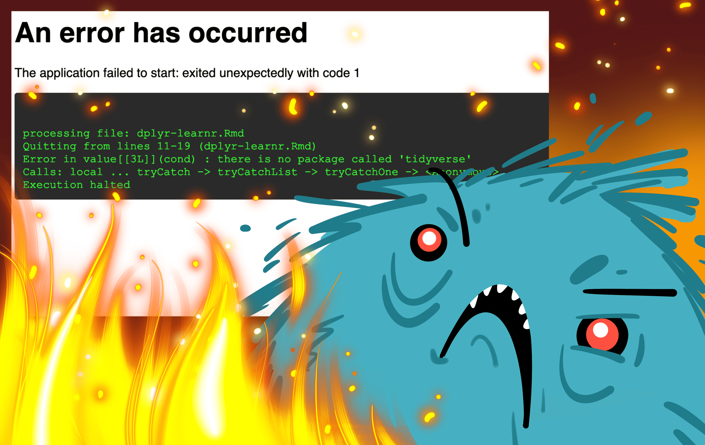
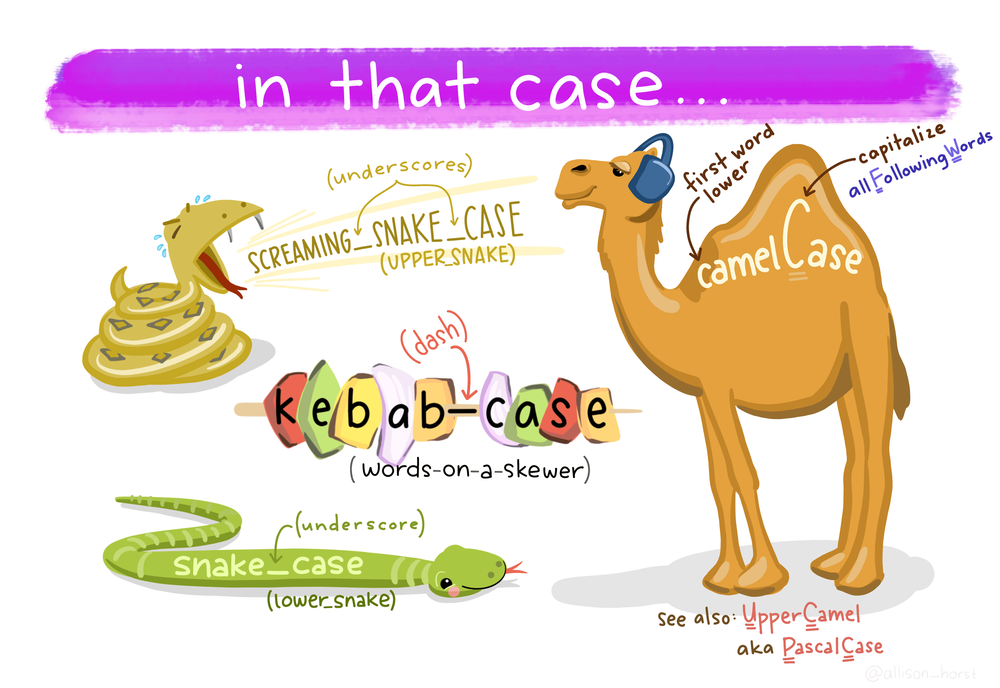
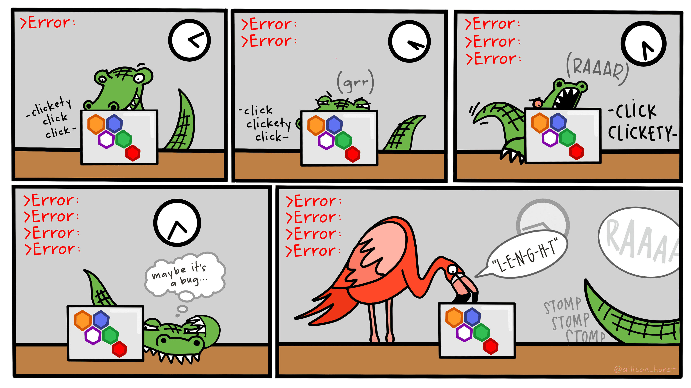
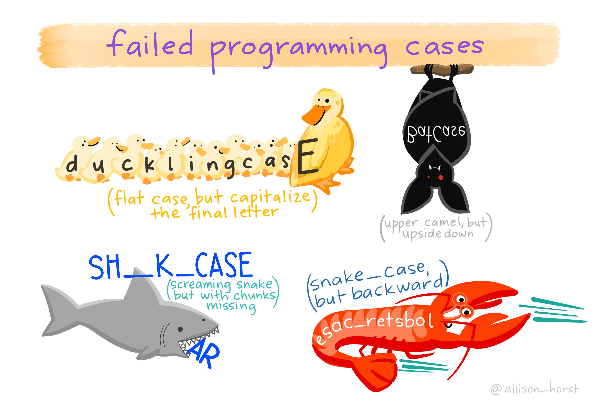
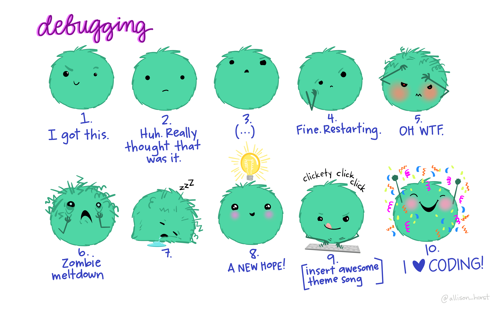
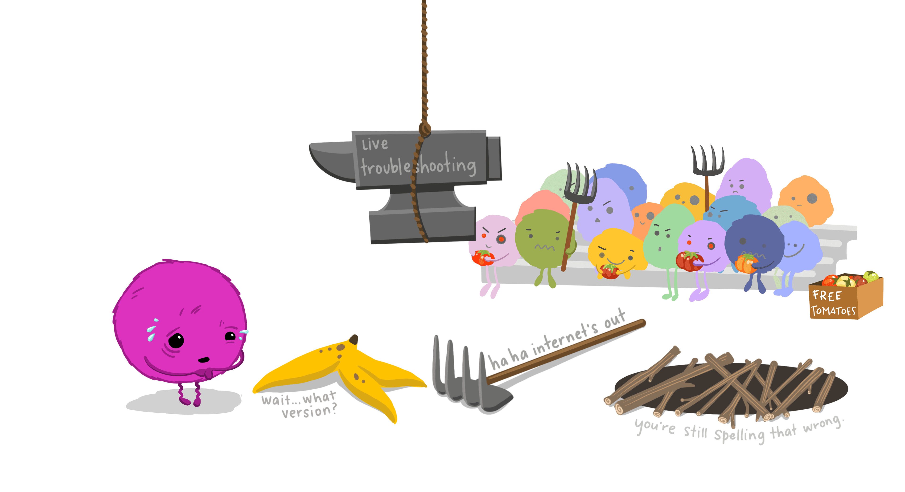
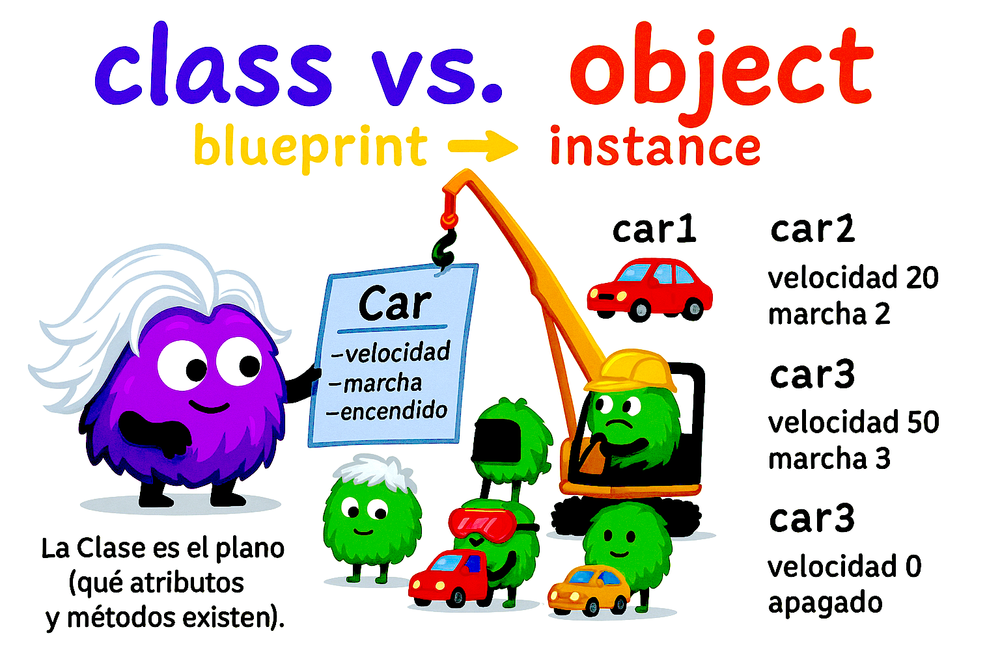

Sección Java
☕ Java
Bienvenido a la sección de Java.
Aquí encontrarás diferentes recursos: ejercicios, presentaciones y proyectos.
Navega usando las pestañas 👇
Aquí puedes ver la presentación directamente 👇
En Java, los errores de sintaxis ocurren cuando no seguimos las reglas gramaticales del lenguaje. Estos errores impiden que el programa compile y suelen ser detectados fácilmente por el editor de código o el compilador.
A diferencia de los errores de ejecución, que aparecen cuando el programa ya se está corriendo, los errores de sintaxis siempre se detectan antes de ejecutar el programa.
Errores más comunes
Olvidar el tipo de dato en una variable
// ❌ Incorrecto
name = "Juan";
// ✅ Correcto
String name = "Juan";
Falta de punto y coma al final de la sentencia
// ❌ Incorrecto
int edad = 20
// ✅ Correcto
int edad = 20;
Olvidar los paréntesis al llamar un método
// ❌ Incorrecto
System.out.println;
// ✅ Correcto
System.out.println
("Hola");
Errores en mayúsculas y minúsculas
int Numero = 10;
// ❌ Incorrecto (variable mal escrita)
System.out.println(numero);
// ✅ Correcto
System.out.println(Numero);
Olvidar las comillas dobles en cadenas
// ❌ Incorrecto
System.out.println(Hola);
// ✅ Correcto
System.out.println("Hola");Usar palabras reservadas como identificadores
// ❌ Incorrecto
int class = 5;
// ✅ Correcto
int clase = 5;Confundir el operador de asignación con el de comparación
int x = 0;
// ❌ Incorrecto
if (x = 2) {
System.out.println("Igual a 2");
}
// ✅ Correcto
if (x == 2) {
System.out.println("Igual a 2");
}👉 Estos errores son normales cuando se empieza a programar en Java. Lo importante es leer el mensaje del compilador, revisar la sintaxis y, si es necesario, apoyarse en comunidades como StackOverflow.

Depurar significa encontrar y corregir errores en un programa. Para ello utilizamos un depurador (debugger), que nos permite ejecutar el código paso a paso, inspeccionar variables y detectar la causa de los problemas.
Ejemplo con error
public class Numeros {
public static void main(String[] args) {
System.out.println("Inicio del programa");
imprimirNumeros(4);
System.out.println("Fin del programa");
}
static void imprimirNumeros(int limit) {
for (int i = 0; i < limit; i += 2) { // ❌ Error: incrementa de 2 en 2
System.out.println(i);
}
}
}Este programa debería imprimir 0, 1, 2, 3, 4, pero solo muestra 0 y 2.
Uso del depurador
Insertar un punto de interrupción (breakpoint) Se coloca en la línea donde queremos detener la ejecución.
- En IntelliJ, basta con hacer clic en el margen gris a la izquierda del código.
- Atajo en Mac:
Cmd + F8.
Ejecutar con depuración
- Menú:
Run → Debug Main. - Atajo en Mac:
Ctrl + D.
- Menú:
Comandos principales
- Step Over (F8): ejecuta la línea actual sin entrar en métodos.
- Step Into (F7): entra dentro del método para ver qué ocurre.
- Variables: muestra automáticamente los valores actuales de las variables.
- Watch: permite observar manualmente variables específicas.
Identificación del error
En el bucle for, la variable i se incrementa de 2 en 2 (i += 2), lo que provoca que solo se impriman números pares.
👉 Corrección:
for (int i = 0; i < limit; i++) { // ✅ Ahora incrementa de 1 en 1
System.out.println(i);
}Resultado esperado
Inicio del programa
0
1
2
3
4
Fin del programa📝 Ejercicios de Depuración
A continuación, algunos programas con errores que deberás depurar usando breakpoints e inspección de variables:
1. Bucle infinito
public class Ej1 {
public static void main(String[] args) {
int i = 0;
while (i < 5) {
System.out.println(i);
// ❌ Error: falta incrementar i
}
}
}Tarea: usar el depurador para descubrir por qué el bucle nunca termina.
2. Variable mal inicializada
public class Ej2 {
public static void main(String[] args) {
int[] nums = {1, 2, 3};
System.out.println(nums[3]); // ❌ Error en ejecución
}
}Tarea: ejecutar en modo debug, inspeccionar el arreglo y entender por qué ocurre el error.
3. Condición incorrecta
public class Ej3 {
public static void main(String[] args) {
int x = 5;
if (x = 5) { // ❌ Error: se usa asignación en lugar de comparación
System.out.println("x es 5");
}
}
}Tarea: usar el depurador para analizar el error de compilación y corregirlo.
En programación es común confundir ambos términos, pero no significan lo mismo:
🔴 Error
Un error es un problema en el programa que impide que funcione correctamente.
Puede ser:
- De sintaxis (compile-time): el compilador no deja ejecutar porque la gramática del lenguaje está mal.
int x = 10 // ❌ Falta punto y coma- De ejecución (run-time): el programa compila, pero falla al ejecutarse.
int y = 5 / 0; // ❌ Error en tiempo de ejecución (división por cero)🟢 Debug
El debug (depuración) es el proceso de encontrar y corregir errores. Incluye acciones como:
- Colocar puntos de interrupción.
- Ejecutar el programa paso a paso.
- Inspeccionar los valores de las variables.
Ejemplo: si el programa solo imprime números pares por error, con el depurador podemos descubrir que el bucle incrementa en i += 2 y corregirlo a i++.
// ❌ Incorrecto
for (int i = 0; i < 5; i += 2) {
System.out.println(i);
}
// ✅ Correcto tras depuración
for (int i = 0; i < 5; i++) {
System.out.println(i);
}📌 En resumen
- Error = el problema.
- Debug = el proceso para encontrar y solucionarlo.


💡 Idea clave: En programación orientada a objetos, una clase es como un plano (blueprint) y un objeto es una casa construida con ese plano. La clase define qué datos (atributos/campos) y qué acciones (métodos) existen; el objeto es una instancia concreta que vive en memoria y tiene su propio estado.
Clase vs. Objeto (la diferencia esencial)
- Clase: plantilla que describe qué es y qué puede hacer un tipo de entidad.
- Objeto: una instancia de esa clase con estado propio.
| Concepto | ¿Qué es? | Palabras clave |
|---|---|---|
| Clase | Plano o molde | atributos/campos, métodos, tipo |
| Objeto | Ejemplar concreto en memoria | instancia, estado, comportamiento |
Ejemplo intuitivo: La clase Car describe que un carro tiene velocidad, marcha, si está encendido, etc., y que puede encender, apagar, acelerar, frenar… Un objeto car1 es tu carro específico (con su velocidad actual), y car2 es otro carro distinto.
Caso 1: Clase Car (coche)
Atributos (estado):
encendido(¿está on/off?)velocidadActual(entera)marchaActual(entera)
Métodos (comportamiento):
encender(),apagar()acelerar(int delta),frenar(int delta)cambiarMarcha(int nuevaMarcha)
// Car.java
public class Car {
private boolean encendido;
private int velocidadActual;
private int marchaActual;
public void encender() { encendido = true; }
public void apagar() { encendido = false; velocidadActual = 0; }
public void acelerar(int delta) { if (encendido) velocidadActual += delta; }
public void frenar(int delta) { if (encendido) velocidadActual = Math.max(0, velocidadActual - delta); }
public void cambiarMarcha(int nueva) { if (encendido) marchaActual = nueva; }
// Getters "bonitos"
public boolean isEncendido() { return encendido; }
public int getVelocidadActual() { return velocidadActual; }
public int getMarchaActual() { return marchaActual; }
}Independencia de objetos: aunque compartan la misma clase, cada objeto tiene su propio estado:
// Main.java
public class Main {
public static void main(String[] args) {
Car car1 = new Car();
Car car2 = new Car();
car1.encender();
car1.acelerar(20); // car1 va a 20
car2.encender();
car2.acelerar(50); // car2 va a 50
System.out.println("car1 -> vel=" + car1.getVelocidadActual());
System.out.println("car2 -> vel=" + car2.getVelocidadActual());
// Salida: car1 -> 20 | car2 -> 50
}
}Caso 2: Clase Lamp (lámpara)
Estado mínimo y muy claro: encendida/apagada. Métodos: turnOn(), turnOff().
public class Lamp {
private boolean isOn;
public void turnOn() { isOn = true; }
public void turnOff() { isOn = false; }
public boolean isOn() { return isOn; }
}💡 Patrón mental: Identifica los estados (booleanos, números, texto) y luego define las acciones que cambian esos estados.
Caso 3: Clase TV (televisor)
Atributos:
isOn(boolean)volumenActual(0–100)canalActual(entero)
Métodos:
turnOn(),turnOff()subirVolumen(),bajarVolumen()cambiarCanal(int canal)
public class TV {
private boolean isOn;
private int volumenActual = 10;
private int canalActual = 1;
public void turnOn() { isOn = true; }
public void turnOff() { isOn = false; }
public void subirVolumen() { if (isOn) volumenActual = Math.min(100, volumenActual + 1); }
public void bajarVolumen() { if (isOn) volumenActual = Math.max(0, volumenActual - 1); }
public void cambiarCanal(int canal) { if (isOn && canal > 0) canalActual = canal; }
public boolean isOn() { return isOn; }
public int getVolumenActual() { return volumenActual; }
public int getCanalActual() { return canalActual; }
}Caso 4: Clase TextBox (un ejemplo de software real)
Las cajas de texto están por todas partes. Atributos:
text(contenido),maxLength(límite de caracteres),widthPx(ancho en píxeles)focused(¿tiene foco?),enabled(¿está habilitada?)
Métodos:
setText(String),clear()enable(),disable(),focus(),blur()
public class TextBox {
private String text = "";
private int maxLength = 200;
private int widthPx = 250;
private boolean focused = false;
private boolean enabled = true;
public void setText(String t) {
if (enabled) text = t.length() <= maxLength ? t : t.substring(0, maxLength);
}
public void clear() { if (enabled) text = ""; }
public void enable() { enabled = true; }
public void disable() { enabled = false; focused = false; }
public void focus() { if (enabled) focused = true; }
public void blur() { focused = false; }
// Getters
public String getText() { return text; }
public boolean isFocused() { return focused; }
public boolean isEnabled() { return enabled; }
public int getWidthPx() { return widthPx; }
}Un vistazo a UML (muy simple y útil)
UML (Unified Modeling Language) es un lenguaje visual para representar clases y relaciones. Aquí va un boceto textual (fácil de pegar en apuntes):
+----------------------------------+
| Car |
+----------------------------------+
| - encendido: boolean
| - velocidadActual: int
| - marchaActual: int
+----------------------------------+
| + encender(): void
| + apagar(): void
| + acelerar(delta:int): void
| + frenar(delta:int): void
| + cambiarMarcha(nueva:int): void
+----------------------------------+Lectura: los signos
-indican privado y+público. Los atributos van en el bloque del medio; los métodos, abajo.